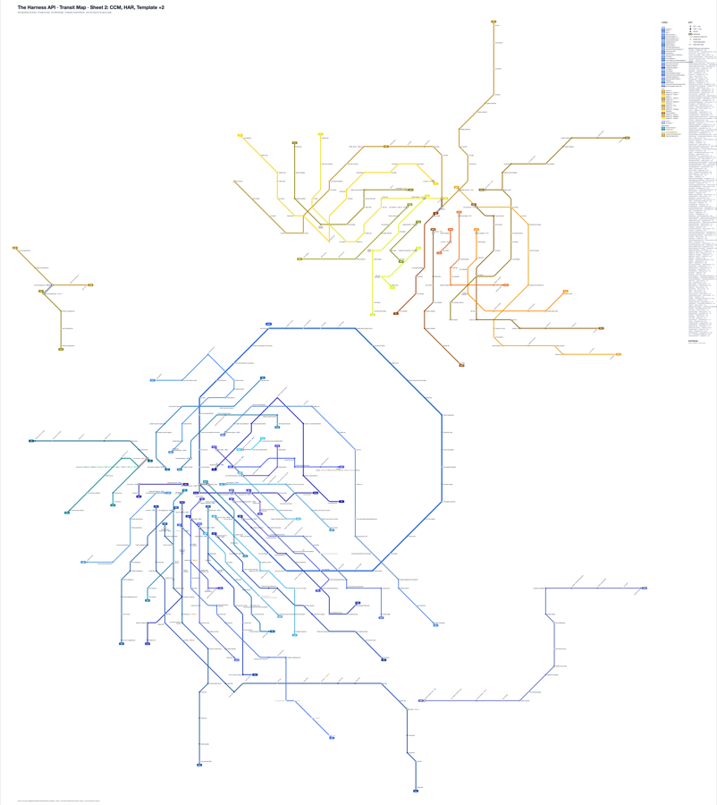
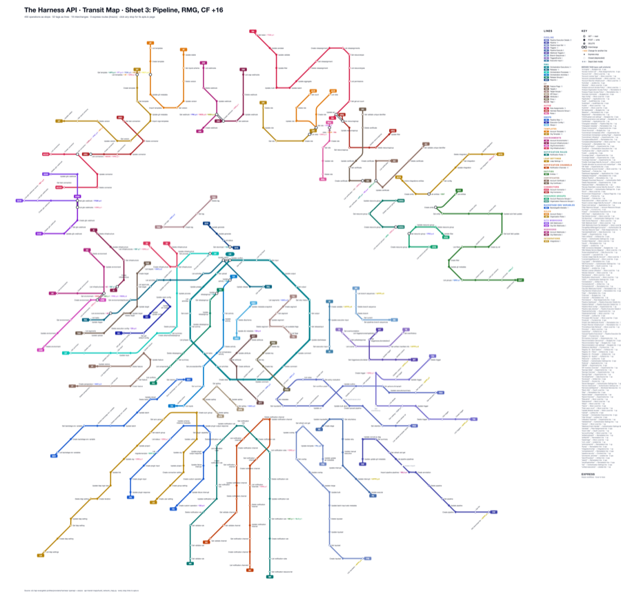
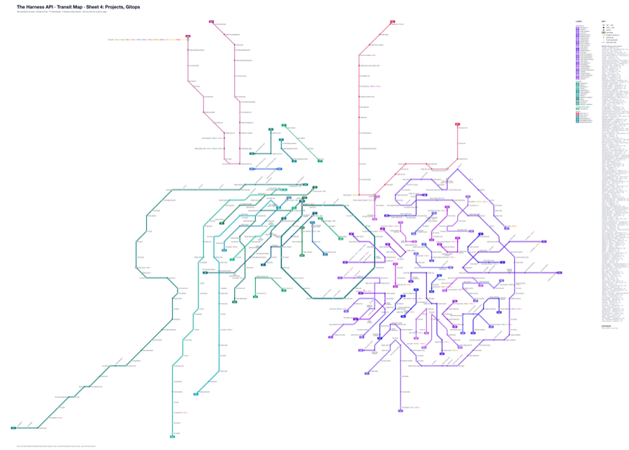
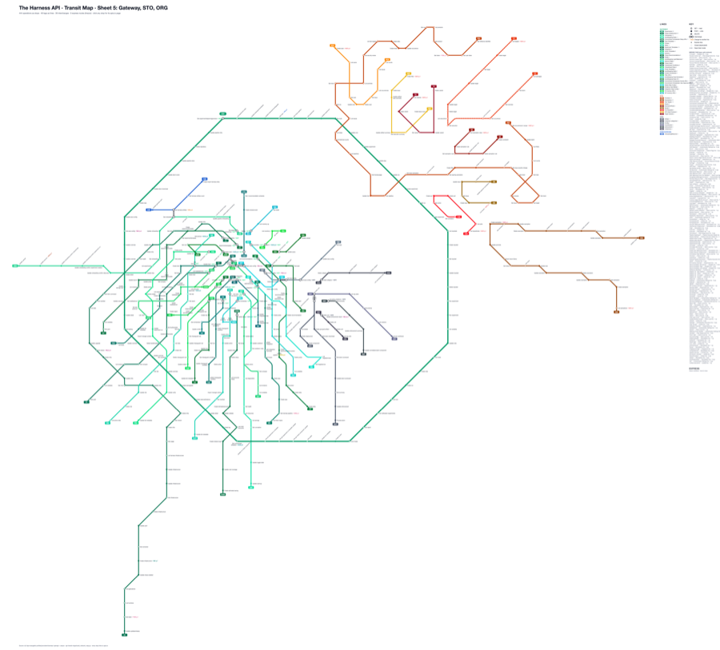
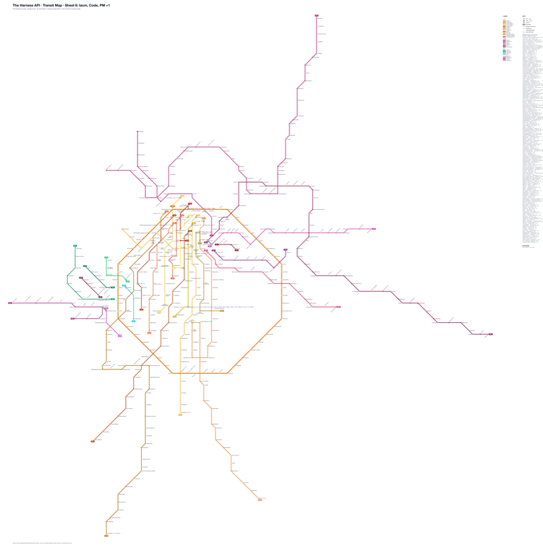
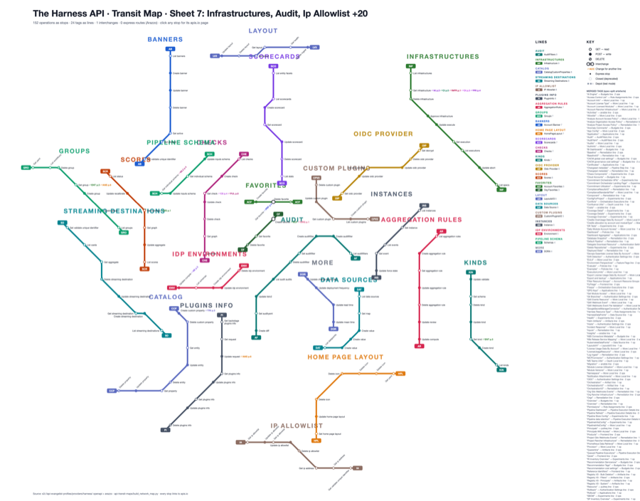

p.1 NG, CV, Secrets
450 operations · 51 lines
- NG
- CV
- Secrets
Interchanges to p.2 (5), p.3 (19), p.4 (39), p.5 (14), p.6 (18), p.7 (3)
2838 operations on 7 sheets · products that interchange most share a sheet · on each sheet, "⇄CODE p.N" means change for that line on page N · every stop links to apis.io
450 operations · 51 lines
Interchanges to p.2 (5), p.3 (19), p.4 (39), p.5 (14), p.6 (18), p.7 (3)

450 operations · 53 lines
Interchanges to p.1 (5), p.3 (10), p.4 (3), p.5 (7), p.6 (3)

450 operations · 52 lines
Interchanges to p.1 (19), p.2 (10), p.4 (18), p.5 (1), p.6 (13), p.7 (6)

448 operations · 50 lines
Interchanges to p.1 (39), p.2 (3), p.3 (18), p.5 (5), p.6 (13), p.7 (4)

444 operations · 48 lines
Interchanges to p.1 (14), p.2 (7), p.3 (1), p.4 (5), p.6 (2), p.7 (1)

444 operations · 26 lines
Interchanges to p.1 (18), p.2 (3), p.3 (13), p.4 (13), p.5 (2), p.7 (3)

152 operations · 24 lines